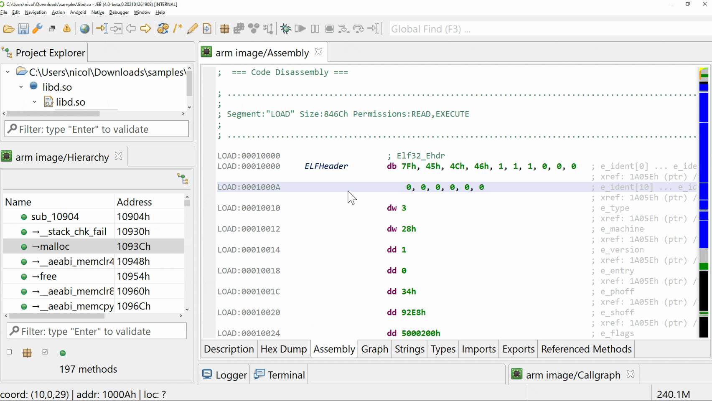

The omnibox is a text input box located on the right side of the toolbar (default hotkey: F3). It allows users to search and quickly visualize (and navigate to) any type of item referenced in your JEB project. From strings to code, comments, bookmarks, command names, and text contents. Type anything you can think of in this box.
